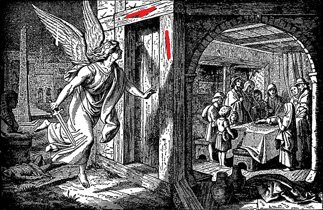

<!doctype html>
<html lang="en">
  <head>
    <!-- Required meta tags -->
    <meta charset="utf-8">
    <meta name="viewport" content="width=device-width, initial-scale=1, shrink-to-fit=no">

    <!-- Bootstrap CSS -->
    <link rel="stylesheet" href="https://cdn.jsdelivr.net/npm/bootstrap@4.0.0/dist/css/bootstrap.min.css" integrity="sha384-Gn5384xqQ1aoWXA+058RXPxPg6fy4IWvTNh0E263XmFcJlSAwiGgFAW/dAiS6JXm" crossorigin="anonymous">

  </head>
  <body>
    <div id="content" class="container"></div>


    <!-- Optional JavaScript -->
    <!-- jQuery first, then Popper.js, then Bootstrap JS -->
    <script src="https://code.jquery.com/jquery-3.2.1.slim.min.js" integrity="sha384-KJ3o2DKtIkvYIK3UENzmM7KCkRr/rE9/Qpg6aAZGJwFDMVNA/GpGFF93hXpG5KkN" crossorigin="anonymous"></script>
    <script src="https://cdn.jsdelivr.net/npm/popper.js@1.12.9/dist/umd/popper.min.js" integrity="sha384-ApNbgh9B+Y1QKtv3Rn7W3mgPxhU9K/ScQsAP7hUibX39j7fakFPskvXusvfa0b4Q" crossorigin="anonymous"></script>
    <script src="https://cdn.jsdelivr.net/npm/bootstrap@4.0.0/dist/js/bootstrap.min.js" integrity="sha384-JZR6Spejh4U02d8jOt6vLEHfe/JQGiRRSQQxSfFWpi1MquVdAyjUar5+76PVCmYl" crossorigin="anonymous"></script>

    <!-- EDIT THESE ITEMS BELOW THIS LINE -->

    <script>
      // header
      const h = "EASTER 2023";
      // question and answer; use the `delimQna` to separate the question from the answer and `delimAs` within the answer to separate the different list items
      const qna = [        
        'Icebreaker#~#All stand; then toss the item@<button class="btn btn-outline-primary" onclick="generateQuestion()">Generate Question</button><p id="question"></p>',
        'Worship Song 1#~#<iframe width="560" height="315" src="https://www.youtube.com/embed/6wcULqyoINg" title="YouTube video player" frameborder="0" allow="accelerometer; autoplay; clipboard-write; encrypted-media; gyroscope; picture-in-picture; web-share" allowfullscreen></iframe>',
        'Worship Song 2#~#<iframe width="560" height="315" src="https://www.youtube.com/embed/YlOJ5o8W4Lw" title="YouTube video player" frameborder="0" allow="accelerometer; autoplay; clipboard-write; encrypted-media; gyroscope; picture-in-picture; web-share" allowfullscreen></iframe>',
        'Worship Song 3#~#<iframe width="560" height="315" src="https://www.youtube.com/embed/oPW9xYEyijQ" title="YouTube video player" frameborder="0" allow="accelerometer; autoplay; clipboard-write; encrypted-media; gyroscope; picture-in-picture; web-share" allowfullscreen></iframe>',
        'What is Passover?#~#@',        
        'THINK: Why do you think people want to have their sins forgiven?',
        `Verse#~#<h2><pre>
Isaiah 59:2
But your iniquities have made a separation 
    between you and your God, 
and your sins have hidden his face from you 
    so that he does not hear you.</pre></h2>`,        
        'Diagram#~#<video width="320" height="240" controls><source src="YHWH.mp4" type="video/mp4"></video>',
        'The Easter story',
        'THINK: How do we know that Jesus was raised to life?#~#Even his enemies admitted that his tomb was empty! (And spread false rumors anyway)@He was crucified in front of hundreds of people, and was seen by hundred of people after he was raised to life@Each Christian has had an encounter with Jesus (in various ways)',
        'LIVING IT OUT#~#Thank our Heavenly Father for sending Jesus to die in our place@Ask Jesus to forgive you of your sins and to be your Lord and Savior@Pray for your family and friends to know Jesus as their Lord and Savior@Ask Jesus to let you know Him better@Ask Jesus to make you do good things and act as a Christian should',
        'GAME#~#Pirate Draw',
        'CRAFT',
      ];

      // process items
      var hContent = "<title>" + h + "</title><h1>" + h + "</h1>"

      // some consts
      const buttonOptions = ["primary", "success", "danger", "warning", "info", "dark"];
      const delimQna = "#~#";
      const delimAs = "@";
      
      var i = 0;
      
      // split items 
      var qnaContent = ``
      for (qnaItem of qna) {
        let qnaSplit = qnaItem.split(delimQna);
        let qnaQuestion = qnaSplit[0];
        // handles when there is no answer to the question
        let qnaAnswers = []
        if (qnaSplit.length > 1) {
          qnaAnswers = qnaSplit[1].split(delimAs);
        }
        let qnaAnswersCode = ""
        
        for (qnaAnswer of qnaAnswers) {
          qnaAnswersCode = qnaAnswersCode + `<li>` + qnaAnswer + `</li>`;
        }
        qnaAnswersCode = `<ol>` + qnaAnswersCode + `</ol>`;

        let iString = i.toString();
        
        qnaContent = qnaContent + `<p>
          <button class="btn btn-` + buttonOptions[i % buttonOptions.length] + `" type="button" data-toggle="collapse" data-target="#collapse` + iString + `" aria-expanded="false" aria-controls="collapse` + iString + `">
            <div style="white-space:normal;">` + qnaQuestion + `</div></button>
            <div class="collapse" id="collapse` + iString + `">
              <div class="card card-body">` + qnaAnswersCode + `</div>
              </div>
              </p>
          `
          i++;
  }

      // script proper
      const htmlContent = hContent + qnaContent;

      window.addEventListener("load", function () {
        document.getElementById("content").innerHTML = htmlContent;
      })

      // generate random question
      function generateQuestion() {
        var questions = [
            "If you could lose your ability to read or your ability to write, which one would you choose?",
            "If you could lose your ability to use a computer or your ability to use a phone, which one would you choose?",
            "If you could lose your ability to watch TV or your ability to play video games, which one would you choose?",
            "If you could lose your ability to eat ice cream or your ability to eat candy, which one would you choose?",
            "If you could lose your memory or your ability to learn new things, which one would you choose and why?",
            "If you could lose your ability to speak or your ability to sing, which one would you choose?",
        ];
        var randomQuestion = questions[Math.floor(Math.random() * questions.length)];
        document.getElementById("question").innerHTML = randomQuestion;
    }


    </script>
    

  </body>
</html>
  
